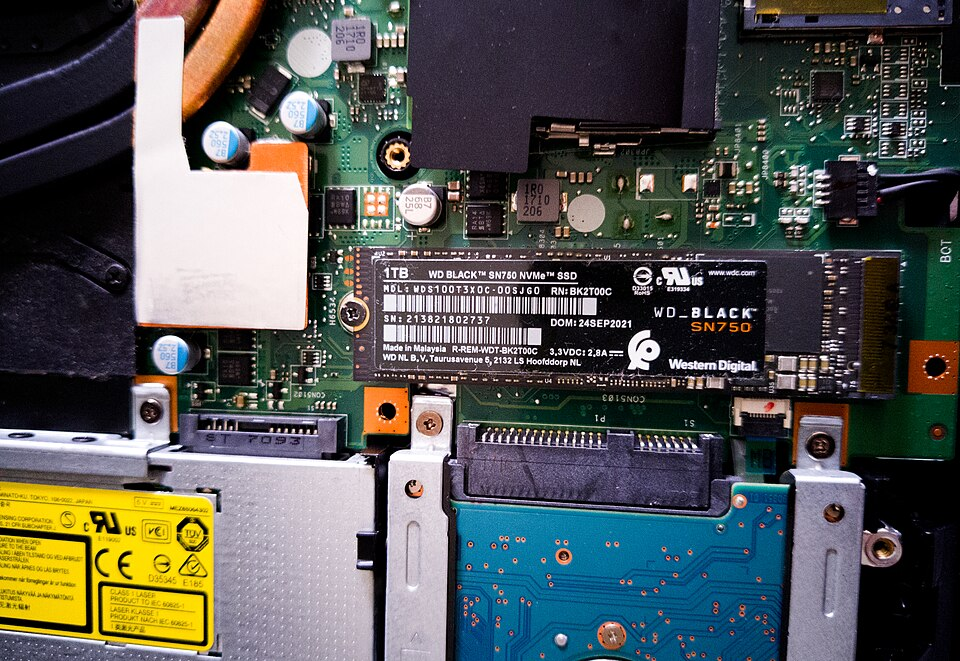

Laptop repair from intake to module replacement
Sort no power, no POST, no boot and no video. Then remove, refit and verify a serviceable module on a laptop you can use for practice.
Classify the complaint while the laptop is closed
Write the exact model, what happened before the failure, the adapter model, and whether preserving data is the priority. Note current condition and any cracks, missing screws or accessories. Start on your own working or repairable spare with a backup and a scratch drive. Stop applying power if there is visible swelling, signs of liquid ingress or unusual heat and follow the maker’s handling guidance.
| Symptom | First evidence to collect | What you can narrow down |
|---|---|---|
| No power | No response to Power. Check wall supply using a known-working outlet, adapter rating, supported cable and the specified charge port. Record adapter and charge LEDs if fitted. | Use a known-good supported adapter and cable before investigating the board. An open-circuit adapter reading alone gives little evidence about current delivery. |
| No POST | Fans or LEDs respond, but firmware never completes its power-on self-test. Record LED and beep patterns and check the exact model’s code table. | Use the documented preboot tests and isolate compatible removable memory if the model permits. Keep one known baseline configuration. |
| No boot | Firmware setup opens but the OS does not start. Check whether the firmware sees the drive and identify the boot error. | Storage detection, boot configuration or OS is the next branch. Preserve user data before any write, reinstallation or recovery action. |
| No video | Machine appears to run with a black or failed internal screen. Try the supported display self-test and an external monitor where supported. | External display or a successful LCD self-test changes the next check. Record exactly what each test exercises on the model. |
LED codes and preboot shortcuts are model-specific. Check the maker’s instructions before changing firmware or firmware settings, particularly where drive encryption is enabled. Dell’s symptom and diagnostics guide.
Bench exercise on a removable SSD

Photo by Kent Madsen (Designermadsen), resized. Original photo · CC BY-SA 2.0.

Watch on YouTube · Framework Laptop 13th Gen Intel Upgrade - 30% More Battery Life & Big Performance Boost! · iFixit
Pause at the internal layout and find the storage slot and retaining screw. Match the components to the service guide for your own Framework generation.

1 · Cooling fan. 2 · M.2 SSD. 3 · Battery. 4 · Memory module area.
Photo by Ogidya, resized, with labels added. Original photo · CC BY 4.0.

Pick a known starting point. Confirm a working baseline in firmware setup and use an already backed-up, non-customer test drive. Identify the supported interface and form factor from the manual. M.2 length alone does not establish SATA or NVMe compatibility.
Follow the exact service sequence. Shut down, disconnect the charger and follow the manufacturer’s service mode or internal battery isolation instructions before touching modules. Use an ESD mat and wrist strap on the unpowered work area. Map screw lengths, connector routing and any thermal shield or pad. Use the manual’s release methods for clips and sockets. On a non-Rugged Latitude 5420 with a 2280 drive, the SSD instructions illustrate the thermal plate and retaining screws. Dell Latitude 5420 illustrated SSD removal.
Change one part. Refit the existing test drive first to practise alignment, then fit a known-good compatible spare if you have one. Restore the thermal plate and reassemble as specified before powering. For a similar exercise on a laptop with removable RAM, change one module or slot at a time and compare preboot memory diagnostics.
Verify the scope of the fix. Check that firmware sees the expected drive and capacity and run the supported read-only diagnostic. Boot a prepared test OS only if the drive already has one and you are authorised to use it. Check charging, the original symptom and functions disturbed during the work, then record every pass or skipped check.
Build a fault case by removing your own scratch drive, reassembling and observing the changed firmware or boot state. Refit it and verify recovery. If a customer drive disappears intermittently and the data matters, limit further power cycles and refer to a recovery specialist before writing or reinstalling.